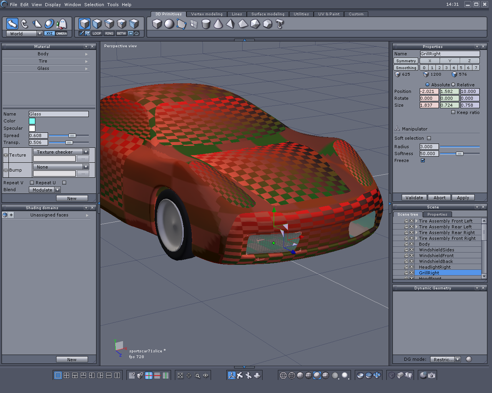

a classic
21 posts
• Page 1 of 1
 by Eric Lengyel » 17 May 2006, 16:32
by Eric Lengyel » 17 May 2006, 16:32
Not quite, but camera->GetInverseWorldTransform() * worldPoint will give you a point in C4's camera space. This camera space is a little different from OpenGL (it's the way OpenGL should have done it). In C4 camera space, x points to the right, y points down, and z points in the direction the camera's looking.
-

Eric Lengyel - Terathon Employee

- Posts: 19108
- Joined: 09 May 2005, 19:00
- Location: Roseville, CA
 by Optime » 18 May 2006, 14:30
by Optime » 18 May 2006, 14:30
> I will now try to project the resulting coordinates onto the interface.
I guess to get the the coordinates from frustrum camera space to map correctly to the interface (to use with SetElementPosition) I would need more than a fixed multiplier as I think I need to compensate for aspect ratio and focal length. Is there some sort of projection matrix I can use or am I completely off here?
I guess to get the the coordinates from frustrum camera space to map correctly to the interface (to use with SetElementPosition) I would need more than a fixed multiplier as I think I need to compensate for aspect ratio and focal length. Is there some sort of projection matrix I can use or am I completely off here?
-

Optime - Community Leader
- Posts: 1575
- Joined: 18 Oct 2005, 19:00
- Location: Frankfurt am Main, Germaica
 by Eric Lengyel » 18 May 2006, 16:10
by Eric Lengyel » 18 May 2006, 16:10
If you have a point (x,y,z) in camera space, then multiply x and y by f/z, where f is the camera's focal length. The view frustum will then be the range [-1,1] horizontally and [-a,a] vertically, where a is the camera's aspect ratio.
-
Eric Lengyel - Terathon Employee
- Posts: 19108
- Joined: 09 May 2005, 19:00
- Location: Roseville, CA
 by Optime » 26 May 2006, 14:38
by Optime » 26 May 2006, 14:38
Just so you all can benefit from this (this runs in camera):
- Code: Select all
Point3D YourCam::projectworldpointtointerface(Point3D targetworldpoint){
targetworldpoint = (GetInverseWorldTransform() * targetworldpoint);
targetworldpoint.x = targetworldpoint.x * (GetObject()->GetFocalLength() / targetworldpoint.z);
targetworldpoint.y = targetworldpoint.y * (GetObject()->GetFocalLength() / targetworldpoint.z);
targetworldpoint.x = (TheDisplayMgr->GetDisplayWidth()/2)+((TheDisplayMgr->GetDisplayWidth()*(targetworldpoint.x)));
targetworldpoint.y = (TheDisplayMgr->GetDisplayHeight()/2)+((TheDisplayMgr->GetDisplayHeight()*(targetworldpoint.y*GetObject()->GetAspectRatio())));
return targetworldpoint;
}
-
Optime - Community Leader
- Posts: 1575
- Joined: 18 Oct 2005, 19:00
- Location: Frankfurt am Main, Germaica
Pick testing in-game?
 by David Vasquez » 26 May 2006, 15:22
by David Vasquez » 26 May 2006, 15:22
Optime wrote:Just so you all can benefit from this (this runs in camera):
- Code: Select all
Point3D YourCam::projectworldpointtointerface(Point3D targetworldpoint){
targetworldpoint = (GetInverseWorldTransform() * targetworldpoint);
targetworldpoint.x = targetworldpoint.x * (GetObject()->GetFocalLength() / targetworldpoint.z);
targetworldpoint.y = targetworldpoint.y * (GetObject()->GetFocalLength() / targetworldpoint.z);
targetworldpoint.x = (TheDisplayMgr->GetDisplayWidth()/2)+((TheDisplayMgr->GetDisplayWidth()*(targetworldpoint.x)));
targetworldpoint.y = (TheDisplayMgr->GetDisplayHeight()/2)+((TheDisplayMgr->GetDisplayHeight()*(targetworldpoint.y*GetObject()->GetAspectRatio())));
return targetworldpoint;
}
Please help me to understand the potential utility of this calculation.
Could I use this function to iterate over the projections of direct manipulation handle objects (little cubes and arrowheads) sitting at the center of or around the perimeter of a selected geometry node in 3D world space onto 2D screen coordinates? Would this then allow me to compare against the position of the mouse, to then pick test whether that handle is being manipulated by the mouse to move left, right, up, or down?
If so, this would allow me to start a basic implementation of in-game translation, scaling, and rotation of geometry nodes, using a direct manipulation user interface like the one I am accustomed to using in more modern 3D modeling tools.
I am speculating that once this picking calculation was working, that one could edit geometry nodes in-game, as long as the edits don't change what zone the geometry nodes reside in.
The idea here is that I would add a "direct-manipulation design mode" switch to the game, perhaps with a key binding to switch between gameplay and design/edit mode.
Anyways, I'll try this calculation out. Thanks for the tip.
-

David Vasquez - Community Leader
- Posts: 4096
- Joined: 17 Apr 2006, 19:00
- Location: Las Vegas, Nevada
Re: Pick testing in-game?
 by Optime » 26 May 2006, 15:33
by Optime » 26 May 2006, 15:33
Huidafa wrote:Please help me to understand the potential utility of this calculation.
Could I use this function to iterate over the projections of direct manipulation handle objects (little cubes and arrowheads) sitting at the center of or around the perimeter of a selected geometry node in 3D world space onto 2D screen coordinates? Would this then allow me to compare against the position of the mouse, to then pick test whether that handle is being manipulated by the mouse to move left, right, up, or down?
Woow. Quite a challenge you have there. If you throw a worldpoint's coordinates at it it will give you x,y to for example SetElementPosition an InterfaceElement with it. You can of course also compare those coordinates to the actual mouse coords to see if user clicked something. In your scenario this is a reverse pick
-
Optime - Community Leader
- Posts: 1575
- Joined: 18 Oct 2005, 19:00
- Location: Frankfurt am Main, Germaica
Re: Pick testing in-game?
 by David Vasquez » 26 May 2006, 15:59
by David Vasquez » 26 May 2006, 15:59
Optime wrote:Huidafa wrote:Please help me to understand the potential utility of this calculation.
Could I use this function to iterate over the projections of direct manipulation handle objects (little cubes and arrowheads) sitting at the center of or around the perimeter of a selected geometry node in 3D world space onto 2D screen coordinates? Would this then allow me to compare against the position of the mouse, to then pick test whether that handle is being manipulated by the mouse to move left, right, up, or down?
Woow. Quite a challenge you have there. If you throw a worldpoint's coordinates at it it will give you x,y to for example SetElementPosition an InterfaceElement with it. You can of course also compare those coordinates to the actual mouse coords to see if user clicked something. In your scenario this is a reverse pick. Though I think this is not the best approach for your problem (if you have 3d manipulation handles). You should actually cast a ray from the mouse position and see what your ray collided with. The code should be equally straight forward. But on the other hand you could use this code to project your manipluation handles into 2D if you want to do that.
For a complex scene, wouldn't projecting a ray from the 2D mouse into 3D to see what it hit chew up more time than just iterating over the small number of direct manipulation handle positions that are already known to be visible in the selection?
I started looking at my modeler UI more closely, and I just realized that I also need to make sure the direct manipulation handles are drawn at a consistent size regardless of their parent object's distance from the camera, so I'll want to scale the handle objects accordingly.
This will be fun. I'll post a screenshot once I have any of this working.
-
David Vasquez - Community Leader
- Posts: 4096
- Joined: 17 Apr 2006, 19:00
- Location: Las Vegas, Nevada
Re: Pick testing in-game?
 by Optime » 26 May 2006, 16:07
by Optime » 26 May 2006, 16:07
Huidafa wrote:For a complex scene, wouldn't projecting a ray from the 2D mouse into 3D to see what it hit chew up more time than just iterating over the small number of direct manipulation handle positions that are already known to be visible in the selection?
Hmm. This will depend on how you organise it. But if you have only one object show 2D handles at once it would be better I think (in terms of handling clicks).
Huidafa wrote:I started looking at my modeler UI more closely, and I just realized that I also need to make sure the direct manipulation handles are drawn at a consistent size regardless of their parent object's distance from the camera, so I'll want to scale the handle objects accordingly.
If you use 2D handles they will be always the same size
-
Optime - Community Leader
- Posts: 1575
- Joined: 18 Oct 2005, 19:00
- Location: Frankfurt am Main, Germaica
Re: Pick testing in-game?
 by David Vasquez » 26 May 2006, 16:29
by David Vasquez » 26 May 2006, 16:29
Optime wrote:If you use 2D handles they will be always the same size
2D handles won't look right. In my modeler UI, the handles are actually 3D volumes (cubes for scaling, pyramids for translation, and rings for rotation) and it gives the user a subtle visual cue that they are rendered in 3D, because they aren't always parallel to the camera. My modeler lets you switch the direct manipulator alignment between world space and object space, so it helps to see the angle at which the handles are aligned, which would be lost if they were just flat shapes drawn in 2D.
There is only one direct manipulator on the screen at a time (for the selected object, face/polygon, or vertex, depending on your selection mode), so overlap isn't a problem.
Once we get to interactively editing individual vertices and UV pairs within C4, then I could see using 2D rects painted onto the camera plane for each selectable vertex or UV pair, with the 3D direct manipulator placed at the centroid of the selection.
-
David Vasquez - Community Leader
- Posts: 4096
- Joined: 17 Apr 2006, 19:00
- Location: Las Vegas, Nevada
Examples of direct manipulation UI
 by David Vasquez » 26 May 2006, 16:41
by David Vasquez » 26 May 2006, 16:41
Here are some screenshots of the UI I am looking forward to using in a C4 in-game design mode, to manipulate the translation, scale, and rotation of selected geometry node objects, faces, vertices, and UV pairs.
In each screenshot, I am manipulating one of the grill pieces in my sports car model.
Translation direct manipulator:
Scale direct manipulator:
and Rotation direct manipulator:
My apologies to those of you on dial up.
In each screenshot, I am manipulating one of the grill pieces in my sports car model.
Translation direct manipulator:

Scale direct manipulator:
and Rotation direct manipulator:
My apologies to those of you on dial up.
-
David Vasquez - Community Leader
- Posts: 4096
- Joined: 17 Apr 2006, 19:00
- Location: Las Vegas, Nevada

Hexagon and Carrara
 by David Vasquez » 27 May 2006, 14:31
by David Vasquez » 27 May 2006, 14:31
DanPartelly wrote:I like the icons. Are they yours ?
No, I haven't designed my own modeler just yet.
I was just trying to show how I would like the direct manipulation to work in C4, with screenshots from the modeler I use, which is called "Hexagon", previously made by a company called Eovia, and which is now owned by a company called Daz.
Jonathan wrote:Thats a modelling app called Carrara. I've herd some nice things about it, and I'm thinking of getting some cash to buy it.
Carrara is the big brother of Hexagon. Carrara does fancy rendering and other stuff. Hexagon is a dedicated SubD (subdivision) modeler. Carrara is a lot more expensive than Hexagon, so if all you need is a modeler, you can save some money.
By the way, if you grab a one month "Platinum club" membership from Daz (I think the membership is about $29), you can purchase Hexagon for $1.99. That's right - two dollars. You can cancel the Platinum club membership after one month if that's all you want. But better hurry, I think the offer ends this month. (http://www.daz3d.com)
The sports car and sniper rifle models I've posted so far, plus a lot more content I haven't shown yet, is all made in Hexagon.
-
David Vasquez - Community Leader
- Posts: 4096
- Joined: 17 Apr 2006, 19:00
- Location: Las Vegas, Nevada
About the UI layout (world editor)
 by David Vasquez » 27 May 2006, 14:37
by David Vasquez » 27 May 2006, 14:37
DanPartelly wrote:I like the icons. Are they yours ?
By the way, do you like the UI layout in Hexagon? This is the layout I would like to see in the C4 world editor.
I was hoping the reason you didn't like the horizontal layout I tried in the C4 world editor, which I presented in another thread on this forum, was because the tool icons were tool big, which created big gaps of unused space. If I could get the original source art for the node creation tools from Eric, I would like to rescale the art a bit smaller to make a layout for the C4 world editor like the one you see above.
Anyways, I'm integrating my previous patches into build 122 today, and while I'm doing so, I'm going to add in a menu item switch to allow switching between the vertical layout for the node creation tools (as seen in the official C4 world editor) and a horizontal layout like you see above.
-
David Vasquez - Community Leader
- Posts: 4096
- Joined: 17 Apr 2006, 19:00
- Location: Las Vegas, Nevada
 by HJPuhlmann » 27 May 2006, 17:13
by HJPuhlmann » 27 May 2006, 17:13
I like it .... very professional .... really a nice UI ...
Pentium(D), WinXP, GF7900GS, 162.18, Maya 8
"I am not a number, I am a free Cylon!"
"I am not a number, I am a free Cylon!"
-

HJPuhlmann - Advanced User

- Posts: 281
- Joined: 22 Feb 2006, 19:00
- Location: Frankfurt Main, Germany
 by DanPartelly » 27 May 2006, 18:20
by DanPartelly » 27 May 2006, 18:20
post a screen after you doit. Im not sure I like having bars on both vertical sides. Unless they can be hidden on edge.
- DanPartelly
- Banned
- Posts: 880
- Joined: 18 May 2005, 19:00
- Location: Romania
"Flip in/out" panels
 by David Vasquez » 27 May 2006, 23:42
by David Vasquez » 27 May 2006, 23:42
DanPartelly wrote:post a screen after you doit. Im not sure I like having bars on both vertical sides. Unless they can be hidden on edge.
In Hexagon, all of the UI panels on all four sides can be shown or hidden by clicking on the rectangular control with a small triangle icon in its center, which appears along the edge of each panel.
Hexagon also has menu commands to hide and show all of the panels at once.
Finally, the left and right side panels can be torn off and float separately from the camera views, which is nice for moving them to a second monitor, which allows the camera views to fill the primary monitor.
Many other creative tools that I use in my everyday work have their own workspace layout options that work much the same way.
Hopefully Eric will endorse these kinds of features for the C4 world editor.
For now, I'll implement a patch for the basic "flip in/out" control for the UI panels in the C4 world editor and post some screenshots once its working.
However, more advanced features, such as floating panels, saving and restoring the layouts, and making the material editor into a dockable panel, will only make it into the world editor if Eric implements those features himself, or agrees to let me add them to the official C4 distribution, because the implementation of those additional features will require more extensive changes that would be too cumbersome to maintain as a patch.
-
David Vasquez - Community Leader
- Posts: 4096
- Joined: 17 Apr 2006, 19:00
- Location: Las Vegas, Nevada
21 posts
• Page 1 of 1
Who is online
Users browsing this forum: No registered users and 1 guest
| Company | Contact | Privacy Policy | Site Map | Copyright © 2001–2015 Terathon Software LLC |  |